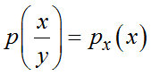
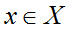
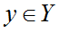
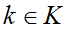
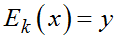
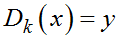
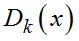

Теоретически стойкие Шифры по Шеннону обладают следующими свойствами.
Невозможность получения на основе шифртекста вероятностной информации о тексте или используемом ключе.
Априорная вероятность открытого текста совпадает с апостериорной вероятностью (с учетом знания шифртекста), т. е. .
Распределение вероятностей ключей равномерное. Для любого открытого текста , шифртекста  существует единственный ключ для которого .
Раздел практической стойкости рассматривает атаки на шифры, не являющиеся совершенными.
Основной элемент практической стойкости по Шеннону это рабочая характеристика шифра, представляющая собой средний объем работы W(N), необходимый для определения ключа по криптограмме, состоящей из N букв, причем N > L0 (объем перехвата больше расстояния единственности), измеренный в удобных элементарных операциях, например, в количестве операций зашифрования или расшифрования.
Ценность большинства данных со временем снижается, поэтому важно, чтобы рабочая характеристика шифра превышала по стоимости защищаемую информацию.
Сложность взлома алгоритмов классифицируется по категориям:
1. Полное вскрытие. Криптоаналитик находит ключ k, такой, что .
2. Глобальная дедукция. Криптоаналитик находит альтернативный алгоритм A, эквивалентный  без знания ключа.
3. Случайная (или частичная) дедукция. Криптоаналитик находит ("крадет") открытый текст для перехваченного шифрованного сообщения.
4. Информационная дедукция. Криптоаналитик добывает некоторую информацию о ключе или открытом тексте. Такой информацией могут быть несколько битов ключа, сведения о форме открытого текста и пр.
Алгоритм безусловно стоек, если восстановление невозможно при любом объеме шифртекста, полученного криптотаналитиком. На поверку безусловно стойки только одноразовые блокноты. Все остальные криптосистемы теоретически можно вскрыть методом грубой силы (прямой подбор ключа, лобовая атака).
Вычислительная стойкость по отношению к лобовой атаке зависит от длины ключа.
Вопросами вычислительной стойкости по отношению к другим методам криптоанализа (вероятностный, линейный, дифференциальный и пр.) занимается теория сложности вычислений.
Существует также понятие имитостойкости шифра, т. е. способность шифра противостоять попыткам противника по его имитации или подмене.